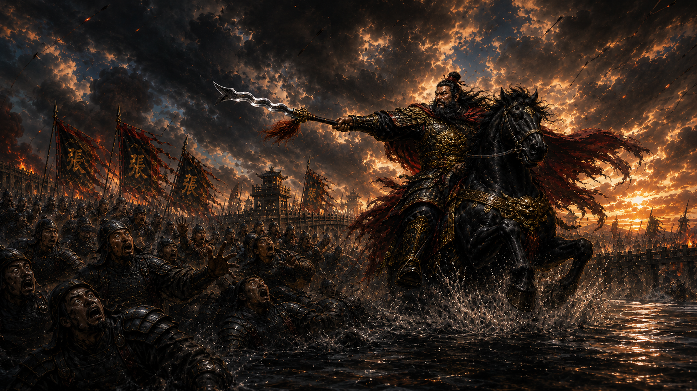
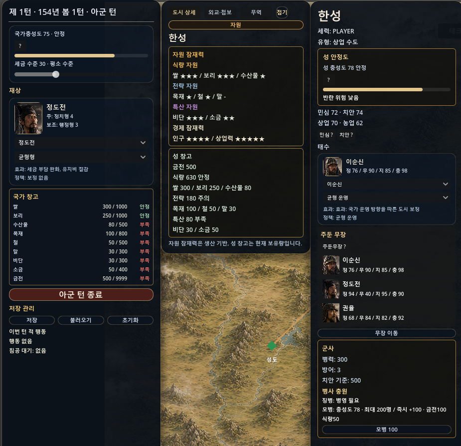
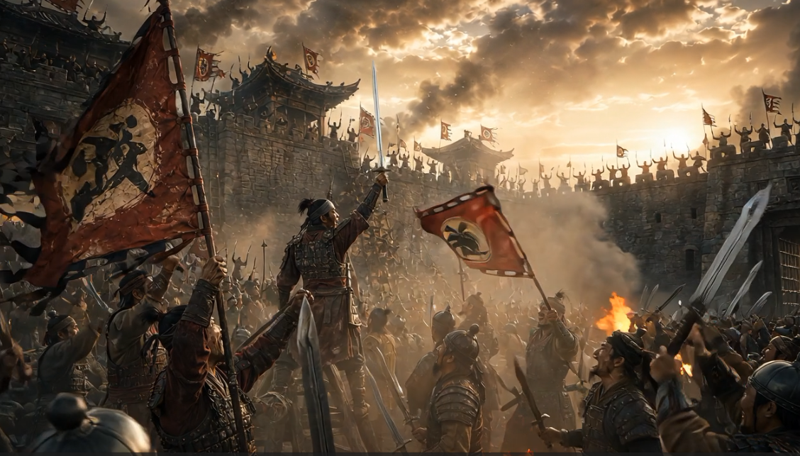
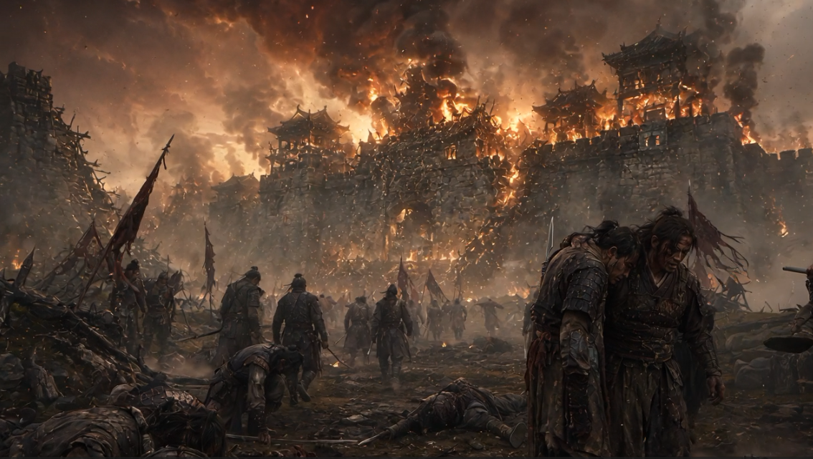

EASTWAR 개발일지 #018
월드맵에서 전투까지, 이어졌다
2026년 5월 29일
지도 위 도시가 살아 움직이기 시작했다
지난번엔 지도가 생기고 도시가 그 위에 자리를 잡았다. 이번 이틀은 그 도시들이 실제로 뭔가를 하게 만드는 시간이었다. 클릭하면 정보가 뜨고, 턴이 돌아가고, 적이 쳐들어오고, 전투가 벌어지고, 그 결과가 다시 지도로 돌아온다 — 이 한 바퀴를 처음으로 완성한 이틀이다.
도시를 클릭하면 뭔가 뜬다
도시 마커를 눌렀을 때 정보 패널이 뜨게 만들었다. 이번에도 원칙은 새로 만들지 않는 것 — 이미 웹 버전에 있던 도시 정보창, 재상·태수 얼굴, 정책 UI 구조를 그대로 가져와 고도 엔진에 맞게 줄여서 이식했다. 국가 창고 표시도 손봤다. 원래는 "쌀 300 / 소금 120 / 금전 500" 같은 텍스트가 줄줄이 나열되던 걸, 자원별 카드 하나하나에 현재값·최대값·상태(안정/부족)가 딱 정리되어 보이는 형태로 바꿨다.

턴이 돌아가기 시작했다
내 턴을 마치면 적 턴으로 넘어가고, 다시 내 턴이 온다 — 당연해 보이지만 이게 처음 생긴 순간이다. 턴 숫자, 월, 계절이 갱신되고 화면이 새로고침 된다. 아직 이 시점엔 적이 실제로 쳐들어오는 건 넣지 않았다. 순서만 먼저 확실히 닫아두는 게 우선이었다.
적이 진짜로 쳐들어온다
턴 사이클이 닫히고 나서, 진짜 침공을 넣었다. 내 턴이 끝나면 일정 확률로 적이 침공을 굴린다. 적 도시 중 내 도시와 맞닿아 있는 곳이 있으면 그곳을 노린다. 이때 곧바로 전투로 넘어가지 않고, "적군이 한성을 침공하려 합니다" 같은 카드가 먼저 뜨고, 내가 직접 방어할지 자동으로 방어할지 고르게 만들었다. 예고 없이 갑자기 전투가 시작되는 것보다, 위기를 미리 보여주고 선택하게 하는 쪽이 훨씬 게임답다고 생각했다.
월드맵에서 전투로, 그리고 다시 월드맵으로
이제 진짜 어려운 부분. 침공 선택이 끝나면 그 정보를 전투 엔진이 이해할 수 있는 형태로 포장해서 넘겨야 한다. 누가 공격하고 누가 방어하는지, 어떤 장수가 몇 명을 데리고 가는지 — 이 모든 정보가 전투 화면까지 그대로 살아서 넘어가게 만들었다. 전투가 끝나면 그 결과(승패, 병력 손실)가 다시 월드맵으로 돌아와서 도시 소유권과 병력에 반영된다. 월드맵과 전투 엔진, 완전히 따로 만들었던 두 세계가 처음으로 서로 대화하기 시작한 거다.


사라졌던 장수가 전장에 나타난 사건
이 과정에서 좀 웃긴 버그를 하나 잡았다. 백제가 침공했는데, 전혀 상관없는 성도 소속 유비랑 제갈량이 지원군으로 전장에 나타난 거다. 처음엔 월드맵의 지원군 후보를 고르는 로직이 잘못된 줄 알았는데, 파고들어 보니 원인은 완전히 다른 곳에 있었다. 전투 슬롯이 비어있을 때 예전에 테스트용으로 넣어둔 "샘플 장수 명단"이 자동으로 그 자리를 채우고 있었던 거다. 원인을 제대로 찾은 덕분에, "월드맵에서 온 전투는 진짜 명단만 쓰고, 자리가 비면 그냥 비워둔다"는 규칙으로 깔끔하게 정리했다.
다치고, 포로가 되고, 회복되고
전투에 나갔다가 진 장수가 그냥 아무 일 없다는 듯 돌아오는 것도 이상해서, 상태라는 개념을 넣었다. 부상당하면 몇 턴 동안 전투력이 떨어지고, 시간이 지나면 회복된다. 포로로 잡히면 그 장수는 회복 전까지 전투에 나갈 수 없다. 아직 포로를 구출한다거나 하는 깊은 시스템까지는 아니고, "다치면 약해지고, 잡히면 못 싸운다"는 최소한의 규칙만 살아있다.
이제 내가 먼저 치는 것도 된다
지금까지는 적이 쳐들어오는 것만 가능했는데, 이번엔 반대로 내가 적 도시를 먼저 공격하는 흐름도 만들었다. 바로 전투로 들어가지 않고, 어떤 장수를 보낼지 고르고 병력을 얼마나 배정할지 정하고 식량·금·소금 같은 출정 비용을 확인하는 "출정 준비" 단계를 거치게 했다.
웹버전 따라잡기, 88%
이 모든 걸 만들면서 계속 웹 버전과 하나하나 대조했다. 병력이 실제로 줄고, 살아남고, 부상당하는 계산 방식부터 전투 결과가 도시에 반영되는 방식까지 — 지금 기준으로 원래 웹 버전 대비 약 88%까지 따라잡았다. 처음엔 84%로 봤는데, 최근 커밋을 다시 확인하니 더 올라와 있었다.
다음 이야기
이제 지도, 도시, 턴, 침공, 전투가 한 바퀴로 이어졌다. 다음 편은 이 위에 진짜 "살아있는 나라"를 얹는 이야기다. 민심과 충성도, 징병과 반란, 테크트리와 외교, 첩보까지 — 전쟁 말고도 판을 뒤집을 수 있는 부분들이 그 다음이다.